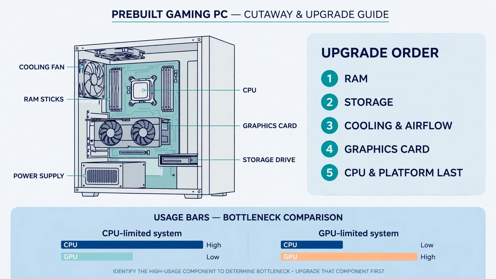

Prebuilt PC Bottleneck: How to Check It and Upgrade in the Right Order
The short answer: a prebuilt PC bottleneck is usually not the headline part on the box — it is the cheaper part around it. Prebuilt PCs commonly ship with a single stick of RAM, a slow or nearly full drive, weak cooling, or a power supply that leaves no room for a better graphics card. This guide shows you how to find the real limit in your own machine in about 15 minutes, and then work through the upgrade order that fixes the actual problem first: RAM and storage, then cooling, then the graphics card, with the CPU and platform last.

What Makes a Prebuilt PC Bottleneck Different
A prebuilt PC is built to a price and a spec sheet, and the parts that do not appear in the headline are where the money is saved. The listing shouts about the CPU and graphics card, but rarely mentions whether the RAM is one stick or two, whether the drive is a fast NVMe SSD or a slow hard drive, or how many case fans and what power supply it has. Those quiet parts are exactly where a CPU or GPU bottleneck usually hides.
Second, a prebuilt PC is not always a standard set of parts: some large brands use proprietary power supplies, non-standard motherboard layouts, or cases with fixed drive cages that limit which graphics cards fit. The upgrade plan must therefore start with compatibility checks a custom build never needs — a card that is perfect on paper is useless if the case cannot hold it or the power supply cannot feed it.
The diagnosis, though, is the same as for any PC: measure what your own machine does while playing your own games, and the readings name the part to fix. That is also why a prebuilt PC bottleneck is often cheaper to fix than people expect — the limiting part is frequently the cheapest one in the box.
Step 1: Find Out What Is Actually Inside Your Prebuilt PC
Before measuring anything, write down what you own. Prebuilt listings are often vague — "16GB RAM" does not say whether that is one 16GB stick or two 8GB sticks, and that difference alone can change gaming smoothness. Open Task Manager with Ctrl + Shift + Esc, go to the Performance tab, and note the CPU model, RAM amount and speed, drive type, and GPU model — our guide to checking PC usage walks through the same screens.
Then open the case — with the PC off and unplugged — and check what Task Manager cannot describe: RAM stick count and slots, power supply wattage and connectors, free graphics card length, and case fan count. Photograph the power supply label and the inside of the case for later shopping, and note the exact model number: for a big-brand prebuilt, its manual and warranty terms are tied to that number.
Finally, run your exact CPU and GPU through the PC Bottleneck Calculator at your real resolution, treating the result as a hypothesis your measurements will confirm or overturn — and read what a good bottleneck percentage means so a small number does not send you shopping unnecessarily.
How to Check a Prebuilt PC Bottleneck in 15 Minutes
You need one monitoring tool and one demanding game. Task Manager's Performance tab is enough for a first pass, and a free overlay tool such as MSI Afterburner puts the same numbers on screen while you play, including per-core CPU usage and frame time. Pick the game that frustrates you most, play a busy scene — not a menu — for 10 to 15 minutes, and watch four readings: CPU usage, GPU usage, RAM usage, and temperatures. Our step-by-step bottleneck check covers the setup.
Watch per-core CPU usage, not just the overall number: a game can be CPU-limited while overall usage looks modest, because one overloaded core is the limit while the others idle. Watch frame time too — a steady average with sharp spikes feels like stutter even when the headline FPS looks fine, as our frame time guide explains. If the result is unclear, repeat the test with the resolution lowered: FPS that barely rises points to the CPU, while FPS that climbs sharply points to the GPU.
Reading the Results: What Each Pattern Means
| What you see while gaming | What it usually means | Fix first |
|---|---|---|
| GPU near full load, CPU with room to spare | GPU limit — the healthy state for a gaming PC | Settings, upscaling, or a faster GPU later |
| CPU core maxed out, GPU well below full load | CPU limit | Free fixes, then CPU or platform — last, not first |
| RAM near full, stutter on scene changes | Memory limit | Second matched RAM stick, or more capacity |
| Long loads, hitching in open worlds | Storage limit | Move games to an NVMe SSD |
| High temperatures, clocks dropping over time | Cooling limit | Airflow, fans, or a better CPU cooler |
Before acting on any row, rule out the free causes: a frame rate cap, V-Sync, or a background program can mimic a hardware limit, and a hot, dusty prebuilt can look like a weak CPU when it is really throttling. If GPU usage is low for no clear reason, see our low GPU usage guide; if CPU usage is at 100% even outside games, see our guide to fixing 100% CPU usage first.
The Prebuilt PC Bottleneck Upgrade Order
Work through this order and stop as soon as your problem is fixed. Each step is cheaper and easier than the next, and only makes sense if your measurements point at it. Upgrading out of order — a flagship graphics card for a PC that stutters because it has one RAM stick — spends the most money on the wrong part.
| Order | Upgrade | Do it when |
|---|---|---|
| 1 | RAM: two matched sticks, dual channel | One stick installed, or RAM near full while gaming |
| 2 | Storage: games on an NVMe SSD | Games on a hard drive, or the drive nearly full |
| 3 | Cooling and airflow | High temperatures or clocks dropping under load |
| 4 | Graphics card | GPU at full load but FPS below target, after PSU and fit checks |
| 5 | CPU and platform | CPU core maxed out, and free fixes did not help |
RAM comes first: it is the most common prebuilt weakness and the cheapest fix, since a second matched stick for dual channel, or a move from 8GB to 16GB or 32GB, can remove stutter no graphics card would fix — see our single vs dual channel guide and 16GB RAM guide. Storage is second: games on a hard drive load slowly and hitch in open worlds, as our SSD vs HDD vs NVMe guide explains. Cooling is third, because a throttled CPU or GPU looks like a weak part — see our thermal throttling guide — and fans or a cooler cost far less than a new processor.
The graphics card only moves up the list when the GPU is genuinely the limit: near full load, but FPS below your target even after settings and upscaling. The CPU sits last deliberately, because a CPU upgrade in a prebuilt often means a new motherboard and RAM too — the most expensive and disruptive step, justified only when measurements show a CPU core maxed out in the games you play. Our PC upgrade checklist offers a second pass before spending.
Free Fixes Before You Spend Anything
Three free checks fix a surprising number of prebuilt PC bottleneck complaints. First, enable the RAM's rated speed profile — XMP on Intel boards, EXPO on AMD boards — in the BIOS, because prebuilt RAM often runs at a slow default speed out of the box; our XMP/EXPO guide shows the steps and boot problems to watch for. Second, remove bundled software and background apps, and check Windows startup items — prebuilt bloatware can eat CPU and RAM before a game even starts. Third, update the graphics driver and tune settings: lowering shadows and ray tracing, or enabling DLSS or FSR upscaling, can lift a GPU-limited PC back above your target FPS for free, as our DLSS and FSR guide explains.
Also check the simple physical causes: dust-clogged intake filters and a case pushed against a wall can raise temperatures enough to throttle a CPU or GPU, and a monitor cable plugged into the motherboard instead of the graphics card will quietly run games on integrated graphics. None of these need a purchase, and all are more common in prebuilt PCs, which often sit unopened for years.
Before You Buy: The Prebuilt Compatibility Checklist
Every prebuilt upgrade, especially a graphics card, needs five checks before you order. First, the power supply: wattage, available connectors, and whether it uses standard connectors at all — some prebuilt units are proprietary, blocking a standard replacement; our PSU bottleneck guide explains what an undersized unit really does. Second, physical fit: the card's length and thickness, and space taken by drive cages or front fans. Third, the motherboard: a free PCIe x16 slot, clearance, and RAM slots matching the sticks you plan to add — see our motherboard bottleneck guide.
Fourth, the BIOS: some prebuilt BIOS versions are locked down, hiding RAM speed settings or limiting CPU support, so check the manufacturer's support page for your exact model first. Fifth, the warranty: read the terms for your model, as covered in the FAQ below, and keep every original part you remove, so you can restore the PC to its shipped state for any warranty claim.
Prebuilt PC Bottleneck Traps: Proprietary Parts, BIOS Limits and Warranty
The trap to watch for is a part that looks standard but is not: a proprietary power supply with different wiring, a motherboard layout that places slots unusually, or a small case with no room for a taller cooler or longer card.
BIOS limits are the quieter trap: a locked BIOS may not expose XMP or EXPO at all, capping RAM speed regardless of the kit you buy, and it may not support a newer CPU even on the same socket — check the manufacturer's CPU support list and BIOS notes for your exact model before buying either. Finally, a second monitor, a higher refresh rate, or a more demanding game changes the bottleneck, as our resolution bottleneck guide explains, so re-run your 15-minute check after any big change.
When an Upgrade Stops Making Sense
Sometimes the honest answer is not another part. If the CPU, motherboard, RAM and power supply all need replacing to reach your target, you are effectively buying a new PC one part at a time — and a new system, or a better-balanced prebuilt, may cost less and leave you with a warranty and a standard platform. The same applies when the case itself is the limit: a proprietary chassis that cannot fit a standard power supply or a modern card caps every future upgrade.
Use a simple rule: add up every part the upgrade requires, including a motherboard, RAM and power supply if the CPU move forces them, and compare that total with a balanced replacement. If the upgrade total approaches the replacement cost, or leaves you on a dead-end platform, the replacement is usually the better spend — judged from your own measurements, not a single bottleneck percentage.
Your Five-Minute Decision Checklist
- List what is inside. CPU, GPU, RAM sticks and speed, drive type, power supply wattage and connectors.
- Measure for 15 minutes. Play a busy scene and note CPU per-core usage, GPU usage, RAM usage and temperatures.
- Match the pattern. Use the readings table above to name the limiting part — do not guess from the spec sheet.
- Try the free fixes. RAM speed profile, background apps, drivers, settings, dust and airflow.
- Check compatibility, then buy one part. Power supply, case fit, motherboard slots, BIOS support and warranty — then re-measure after the change.
Free PC Bottleneck Calculator — Estimate CPU and GPU balance for your resolution and workload: check whether your CPU or GPU is the slow half of the frame on the PC Bottleneck Calculator (see its methodology page) before you buy an upgrade for your prebuilt PC.
Conclusion
A prebuilt PC bottleneck is usually found, not assumed: measure your own machine, and the readings will point at the part that actually needs fixing — most often RAM or storage, sometimes cooling, then the graphics card, and only last the CPU and platform. Work through the upgrade order one part at a time, check power supply, case fit, BIOS support and warranty before every purchase, and re-measure after each change. To check your exact pairing first, try the free PC Bottleneck Calculator.
Frequently Asked Questions
What should I upgrade first in a prebuilt gaming PC?
Start with whatever your measurements show is actually limiting you — but for most prebuilt PCs that is RAM or storage first. A single RAM stick running in single channel, or games installed on a slow or nearly full drive, are the most common prebuilt weaknesses, and both are cheap to fix. A graphics card comes later, only after you have checked the power supply and case fit, and the CPU and platform come last.
How do I check if my prebuilt PC has a bottleneck?
Play your most demanding game for 10 to 15 minutes with an on-screen overlay or Task Manager open, and watch CPU usage, GPU usage, RAM usage and temperatures. A GPU near full load with the CPU having room to spare is the healthy state. A CPU at or near full load while the GPU sits well below full load points to a CPU limit, and RAM sitting near full points to a memory limit.
Can I put a new graphics card in a prebuilt PC?
Usually yes, but a prebuilt PC adds three checks a custom build does not: the power supply must have enough wattage and the right connectors, the card must physically fit the case, and the power supply must use standard connectors rather than a proprietary design. Check all three, plus the motherboard's PCIe slot, before buying — a card that does not fit or cannot be powered is a return, not an upgrade.
Does adding RAM fix a bottleneck in a prebuilt PC?
It fixes a RAM bottleneck, which is common in prebuilt PCs shipped with a single stick or only 8GB. Moving from one stick to two matched sticks in dual channel, and from 8GB to 16GB or 32GB, removes the stutter that comes from running out of memory. It will not fix a CPU limit or a weak graphics card, so check your usage readings first to confirm RAM is actually the problem.
Will upgrading my prebuilt PC void the warranty?
It depends on the manufacturer's warranty terms, which vary by brand and model. Some prebuilt warranties allow user upgrades such as adding RAM or storage, while others treat opening the case or replacing certain parts as voiding cover. Read the warranty terms for your exact model before you open the case, and keep the original parts so you can restore the PC to its shipped state if you ever need a warranty claim.
Sources
Official documentation referenced in this guide: